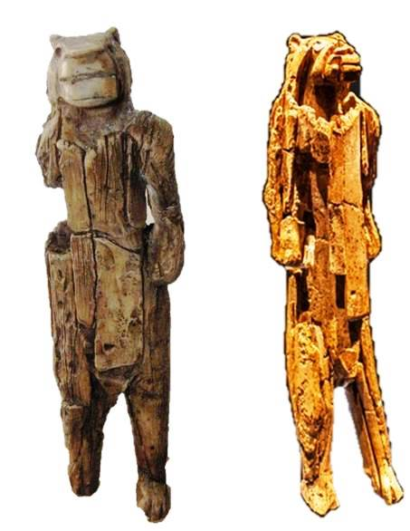

Causality
The Book of Why
The goal is to relate that to current NN models that do not interact with the world.
An agent can observe the result of its actions in the world and learn simple causality. It can also observe the results of actions of other agents.
1. The Ladder of causation
Ladder of causation
First, very early in our evolution, we humans realized that the world is not made up only of dry facts(what we might call data today); rather these facts are glue together by an intrincate web of cause-effect relationships.
Second, causal explanations, not dry facts, make up the bulk of our knowledge, and should be the cornerstone of machine intelligence.

The goal of strong AI is to produce machines with humanlike intelligence, able to converse with and guide humans. Deep Learning has instead given us machines with truly impressive abilities but no intelligence. The difference is profound and lies in the absence of a model of reality.
The lack of flexibility and adaptability is inevitable in any system that works at the first level of the ladder of causation
A sufficiently strong and accurate causal model can allow us to use rung-one (observational) data to answer rung-two (interventional) queries
Cognitive revolution

The Lion Man is a 40k year old sculpture. Is different from previous art because is a creature of previous imagination. Within 10k years after the Lion Man's creation all other hominids had become extinct.
Humans evolved from apelike ancestors over a period of 6 million years. But in roughly the last 50k years something unique happened, which some call the Cognitive Revolution. Humans acquired the ability to modify their environment and their own abilities at a dramatically faster rate.
Their newly acquired causal imagination enabled them to do many things more efficiently through a tricky process called "planning".
Probability
Decades' worth of experience with these kinds of questions has convinced me that, in both a cognitive and a philosophical sense, the idea of causes and effects is much more fundamental than the idea of probability. We begin learning causes and effects before we understand language and before we know any mathematics.
Probabilities, as given by expressions like , lie on the first rung of the Ladder of Causation and cannot ever (by themselves) answer queries on the second or third rung.
While probabilities encode our beliefs about a static world, causality tells us whether and how probabilities change when the world changes, be it by intervention or by act of imagination.
2. From Buccaneers to Guinea Pigs
This chapter tells the history of how the dominant school of thought in statistics banned causality from science and instead advocated for correlation. It's interesting to see the influence of eminent statisticians. It also tells how Wright battled with them with his path analysis technique.
Regression to the mean
Many events are influenced by luck. Success is one of them, thus when events are repeated is unlikely to achieve and extraordinary good result.
History of Pearson and his preference for correlation over causation
Guinea pigs

You cannot draw causal conclusions without some causal hypotheses.This echoes what we concluded in Chapter 1: you cannot answer a question on rung two of the ladder of causation using only data collected from rung one.
3. From Evidence to Causes: Reverend Bayes meets Mr Holmes
Bayes theorem
Bayer theorem shows that you can deduce the probability of a cause from an effect. If we know the cause it is easy to estimate the probability of the effect, which is a forward probability. Going the other direction is harder.
For example if we have covid then we know the probability of having a positive result in a covid test (simply look at the FNR of the test). However computing the probability of having covid given that we know that the result of the test is positive is not straitghtforward.
We can estimate the conditional probability directly in one direction, for which our judgment is more reliable, and use mathematics to derive the conditional probability in the other direction, for which our judgment is rather hazy.
With that equation we can compute the probability of having covid given that the result of the test was positive.
There is an interesting example of mammogram test to check for breast cancer.
Bayes theorem allows to update our prior belief about something using new information. The likelihood ratio modifies the initial belief.
Then there is a tiny glimpse at bayesian networks
I felt convinced that any artificial intelligence would have to model itself on what we know about human neural information processing and that machine reasoning under uncertainty would have to be constructed with a similar message passing architecture. But what are the messages? This took me quite a few months to figure out. I finally realize that the messages were conditional probabilities in one direction and likelihood ratios in the other.
Bayesian networks
A bayesian network carries no assumption that the arrow has a causal meaning. The arrow merely signifies that we know the "forward" probability. Baye's rule tells us how to reverse the procedure, specifically by multiplying the prior probability by a likelihood ratio.
| Pattern | Model |
|---|---|
| Chain | |
| Fork | |
| Collider |
Chain junction. In science one often thinks of B as the mechanism, or mediator that transmits the effect of A to C. A familiar example is Fire Smoke Alarm
Fork junction. B is often called a confounder of A and C. The confounder will make A and C statistically correlated even thought there is no direct causal link between them. A good example is Shoe Size Age of child Reading ability
We can eliminate this spurious correlation by conditioning on the child's age. If we look only at seven-years-olds we expect to see no relationship between shoe size and reading ability
Collider junction. Talent Celebrity Beauty. Here we are asserting that both talent and beauty contribute to an actor's success, but beauty and talnent are completely unrelated to one another in the general population.
In this case if we condition on B we will see a negative correlation between A and B. If we look only at famous actorss finding out that a celebrity is unnatractive increases our belief that he is talented.
The diagram describes the relation of the variables in a qualitative way, but if ou want quantitative answers you also need quantitative inputs.
By depicting A as a root noted we do not really mean that A has no prior causes. We really mean that any prior causes of A can be adequately summarized in the prior probability.
A bayesian network is integrative, which means that it reacts as a whole to any new information
From Bayesian networks to causal diagrams
Bayesian networks hold the key that enables causal diagrams to interface with data. All the probabilistic properties and the belief propagation algorithms remain valid in causal diagrams.
In a causal diagram the direction of the arrows implies causality whereas on the bayesian networks it only implies the forward probability.
Causal assumptions cannot be invented at our whim, they are subject to the scrutiny of data and can be falsified (probed that they are wrong)
However the graphical properties of the diagram dictate which causal models can be distinguished by data and which will forever remain indistinguishable, no matter how large the data. For example we cannot distinguish the fork from the chain by data alone because with C listening to B only, the two imply the same independence conditions.
This is very interesting because it says that data is not enough to create a causal diagram. We need to make hypothesis about the causal model.
Whereas a Bayesian network can only tell us how likely one event is given that we observed another, causal diagrams can answer interventional and counterfactual questions.
4. Confounding and deconfounding: Or, Slaying the Lurking Variable
We compare a group of people who get the treatment with a group of similar people who don't.
Confounding bias occurs when a variable influences both who is selected for the treatment and the outcome of the experiment
If the confounding variable Z is age, we compare the treatment and control groups in every age group separately. We can then take an average of the effects, weighting each age group according to its percentage in the target population. This method of compensation is familiar to all staticians; it is called "adjusting for Z" or "controlling for Z"
Although confounding has a long history in all areas of science, the recognition that the problem requires causal, not statistical, solutions is very recent.
Randomized controlled trial
The one circumstance under which scientist will abandon some of their resistence to talk about causality is when they have conducted a randomized controlled trial
Around 1923 Fisher began to realize that the only experimental design that the nature genie could not defeat was a random one
Fisher realized that an uncertain answer to the right question is much better than a highly certain answer to the wrong question
Randomization brings two benefits: First it eliminates the confounder bias (it asks Nature the right question). Second it enables the researcher to quantify his uncertainty.
If you know what all the confounders are you can measure and adjust for them. However with randomization has the advantage of elminating unknown confounders or confounders that we cannot control
All things being equal RTC are still preferred to observational studies, just as safety nets are recommended for tighrope walkers. But in some cases intervention may not be possible.
Confounding
Confounding should be simply defined as anything that leads to a discrepancy between the two
Back-door criterion
To deconfound two variables X and Y, we only need to to block every noncausal path between them without blocking or perturbing the causal paths. More precisely a back-door path is any path from X to Y that starts with an arrow pointing into X. X and Y will be deconfounded if we block every back-door path. If we do this by controlling for some set of variables Z, we also need to make sure that no member of Z is a descendant of X on a causal path.
This are the rules to stop the flow of information throught any individual junction:
- In a chain junction controlling for B prevents information about A from getting to C or viceversa
- In a fork junction controlling for B prevents information about A from getting to C or viceversa
- In a collider the variables A and C start out independent, but if you control for B information starts flowing.
-
- Controlling for descendants of a variable is lieke partially controlling for the variable itself
I consider the complete solution of the confounding problem one of the main high-lights of the causal revolution
5. The smoke-filled debate: clearing the air
The problem of verifying that smoking caused cancer
one of the most important scientific arguments against the smoking-cancer hypothesis was the possible existence of unmeasured factors that cause both craving for nicotine and lung cancer.
some of the greatest milestones in medical history dealt with identifying causative agents. In the mid-1700s, James Lind had discovered that citrus fruits could prevent scurvy, and in the mid-1800s, John Snow had figured out that water contaminated with fecal matter caused cholera.
These brilliant pieces of detective work had in common a fortunate one-to-one relation between cause and effect.
The smoking-cancer debate challenged this monolithic concept of causation. Many people smoke their whole lives and never get lung cancer. Conversely, some people get lung cancer without ever lighting up a cigarette.
statisticians already knew of one excellent way to establish causation in a more general sense: the randomized controlled trial (RCT). But such a study would be neither feasible nor ethical in the case of smoking.
How they arrived to a conclusion
He propose to compare patients who had already been diagnosed with cancer to a control group of healthy volunteers. The type of study Doll and Hill conducted is now called a case-control study because it compares “cases” (people with a disease) to controls. It is clearly an improvement over time series data, because researchers can control for confounders like age, sex, and exposure to environmental pollutants. This case-control design has the drawback of being retrospective: it tell us the probability that a cancer patient is a smoker instead of the probability that a smoker will get cancer.
Instead of drawing inferences by assuming the absence of certain causal relationships in the model, the analyst challenges such assumptions and evaluates how strong alternative relationships must be in order to explain the observed data. This technique is called today "sensitivity analysis"
To judge or evaluate the causal significance of the association between the attribute or agent and the disease, or effect upon health, a number of criteria must be utilized, no one of which is an all-sufficient basis for judgment.” The committee listed five such criteria: consistency (many studies, in different populations, show similar results); strength of association (including the dose-response effect: more smoking is associated with a higher risk); specificity of the association (a particular agent should have a particular effect and not a long litany of effects); temporal relationship (the effect should follow the cause); and coherence (biological plausibility and consistency with other types of evidence such as laboratory experiments and time series).
Viewed from the perspective of causality, the report was at best a modest success. It clearly established the gravity of causal questions and that data alone could not answer them. But as a roadmap for future discovery, its guidelines were uncertain and flimsy.
Cornfield’s inequality, which planted the seeds of sensitivity analysis, was a step in that direction.
Paradox of smoking on newborns
By looking only at babies with low birth weight, we are conditioning on that collider. This opens up a back-door path between Smoking and Mortality that goes Smoking → Birth Weight ← Birth Defect → Mortality. This path is noncausal because one of the arrows goes the wrong way.
6. Paradoxes galore!
This chapter is a collection of different paradoxes. It makes enphasys in the fact that data generation or selection process can cause correlations to appear:
- Monty Hall problem
- Simpson paradox
- Berkson's paradox
- Lord's paradox